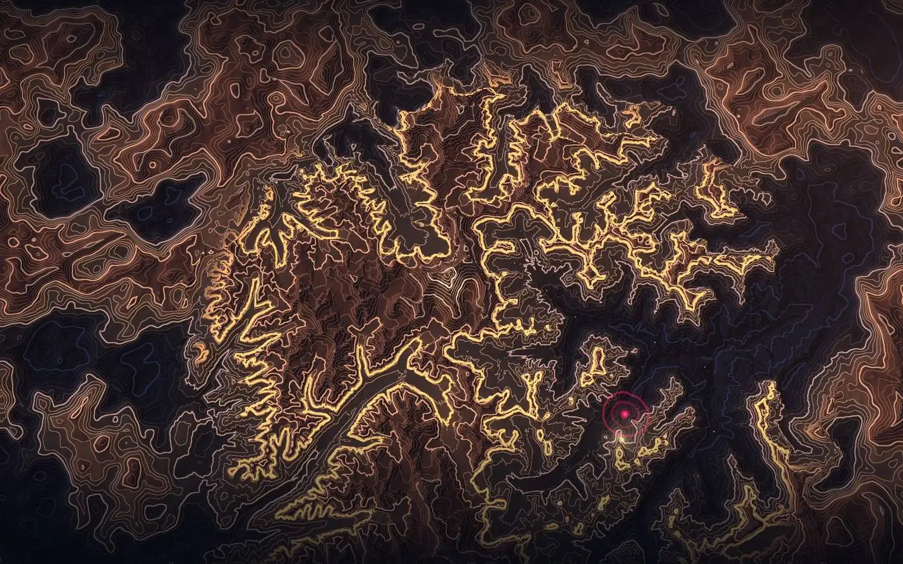

Making of
Un territoire réel, une lumière qui descend, des voix qu’on va chercher.
La page d’accueil de GOKYO n’est ni une vidéo ni une image : c’est le relief réel du Khumbu, au Népal, dessiné en direct par votre navigateur, à chaque image.

00 Pourquoi
J’ai deux passions : la montagne et l’informatique. J’ai eu la chance de parcourir moi-même ces vallées, jusqu’au pied des géants. Là-haut, tout se mérite : chaque col, chaque panorama se paie en jours de marche et en souffle court.
J’en suis revenu avec une envie : rendre l’inaccessible accessible. Faire entrer ce territoire dans un écran, fidèle à son relief réel et à sa première lumière, pour que chacun puisse s’y promener, où qu’il soit, en quelques secondes.
Finscale fait la même chose avec les idées. Le podcast aborde des sujets complexes par ce qu’il y a de plus humain : une voix, un parcours, la personnalité de chaque invité. La montagne reste aussi haute. Une voix ouvre le chemin.
— JBN
01 L’idée
Gokyo est un village du Khumbu, à 4 790 m, au pied du Cho Oyu. GOKYO, la société luxembourgeoise, lui emprunte son nom : le goût de l’effort, de l’altitude et du travail bien fait. La page ne raconte pas une activité. Elle montre un territoire, et ce qui s’y passe.
Elle s’ouvre sur la nuit. La lumière touche d’abord les sommets de plus de 8 000 m, puis descend lentement le long des pentes, comme un vrai lever de soleil en haute montagne. Les vallées restent dans le bleu de la nuit.
02 L’histoire
Douze bases sont posées sur des lieux réels : Namche Bazaar, Tengboche, Gokyo, le camp de base de l’Everest, celui du Makalu… Chacune porte l’un des grands sujets du podcast Finscale, édité par GOKYO.
Un hélicoptère rose en fait le tour. À chaque escale, une voix — un point doré — quitte la vallée et le rejoint : c’est l’invité d’un vrai épisode. La fiche en haut à gauche en donne le numéro, le titre, l’invité et sa société, comme un carnet de bord. Les données sont mises à jour chaque jour.

03 Les données
Le relief vient du modèle numérique de terrain Copernicus DEM GLO-30 (DLR et Airbus Defence and Space, pour l’Union européenne et l’ESA). Un disque d’environ 80 km de diamètre, ramené à 88 m par point, englobe le Cho Oyu, l’Everest, le Lhotse et le Makalu. Le relief est exagéré d’environ 1,5 fois en hauteur pour mieux lire les pentes.
Une ligne tous les 200 m, une ligne marquée tous les 1 000 m. Au-delà du disque, la carte continue : les courbes d’un relief inventé sont peintes sur un sol plat, jusqu’à l’horizon.

04 La technique
Tout est écrit à la main, sans bibliothèque ni framework. Un seul programme graphique (WebGL2) lance un rayon par pixel, trouve où il touche le relief, puis calcule la lumière, les courbes de niveau et la brume. Les courbes sont tracées à partir de la pente vue à l’écran : elles restent fines, quelle que soit la distance.
- La caméra, la lumière de l’aube et la courbe dorée sont réglées comme une partition : un battement de 24 secondes, lent et régulier.
- Le calcul se limite au disque de relief réel ; le sol peint se calcule d’un coup. La page tourne de façon fluide sur téléphone.
- Sur un appareil sans carte graphique, la 3D est remplacée par une image fixe du même relief.
- Ni cookie, ni mesure d’audience, ni lien sortant sur la page d’accueil.
05 Le son
La musique est facultative et ne démarre que si vous l’activez : « Transcend », courtesy of MorningLightMusic.io.
06 Crédits
Conception et réalisation : NiderLabs by JBN. Éditeur : GOKYO S.à r.l.-S, Luxembourg.
Copernicus DEM GLO-30 © DLR e.V. 2010-2014 et © Airbus Defence and Space GmbH 2014-2018, fourni dans le cadre de COPERNICUS par l’Union européenne et l’ESA ; tous droits réservés.
Making of
A real landscape, a light coming down, voices gathered one by one.
The GOKYO homepage is neither a video nor a picture: it is the real terrain of the Khumbu, in Nepal, drawn live by your browser, frame after frame.
00 Why
I have two passions: mountains and computing. I was lucky enough to walk these valleys myself, all the way to the foot of the giants. Up there, everything has to be earned: each pass, each view is paid for in days of walking and in thin air.
I came back with one wish: to make the inaccessible accessible. To bring this landscape to a screen, true to its real shape and its first light, so that anyone, anywhere, can wander through it in a few seconds.
Finscale does the same with ideas. The podcast takes on complex subjects through what is most human: a voice, a life story, the personality of each guest. The mountain stays just as high. A voice opens the way.
— JBN
01 The idea
Gokyo is a village in the Khumbu, at 4,790 m, at the foot of Cho Oyu. GOKYO, the Luxembourg company, borrows its name: a taste for effort, altitude and work done well. The page does not describe a business. It shows a landscape, and what happens in it.
It opens at night. Light first touches the peaks above 8,000 m, then slowly moves down the slopes, like a real sunrise in high mountains. The valleys stay in the blue of the night.
02 The story
Twelve bases stand on real places: Namche Bazaar, Tengboche, Gokyo, Everest Base Camp, Makalu Base Camp… Each carries one of the main topics of the Finscale podcast, published by GOKYO.
A pink helicopter flies from base to base. At every landing, a voice — a golden light — leaves the valley and joins it: the guest of a real episode. The card in the top-left corner gives its number, title, guest and company, like a logbook. The data is refreshed every day.
03 The data
The terrain comes from the Copernicus DEM GLO-30 elevation model (DLR and Airbus Defence and Space, for the European Union and ESA). A disc about 80 km across, resampled to 88 m per point, takes in Cho Oyu, Everest, Lhotse and Makalu. Heights are exaggerated about 1.5 times to make the slopes easier to read.
One line every 200 m, a stronger line every 1,000 m. Beyond the disc, the map goes on: the contours of an invented terrain are painted on flat ground, all the way to the horizon.
04 The craft
Everything is hand-written, with no library or framework. A single WebGL2 program casts one ray per pixel, finds where it meets the terrain, then works out light, contour lines and haze. The contours are drawn from the on-screen slope, so they stay thin at any distance.
- Camera, dawn light and the golden contour are timed like a score: one slow, steady 24-second beat.
- Ray marching is limited to the disc of real terrain; the painted ground is solved in one step. The page runs smoothly on phones.
- On devices without a graphics chip, the 3D is replaced by a still image of the same terrain.
- No cookies, no analytics, no outbound links on the homepage.
05 Sound
Music is optional and only plays if you turn it on: “Transcend”, courtesy of MorningLightMusic.io.
06 Credits
Design and development: NiderLabs by JBN. Publisher: GOKYO S.à r.l.-S, Luxembourg.
Copernicus DEM GLO-30 © DLR e.V. 2010-2014 and © Airbus Defence and Space GmbH 2014-2018, provided under COPERNICUS by the European Union and ESA; all rights reserved.